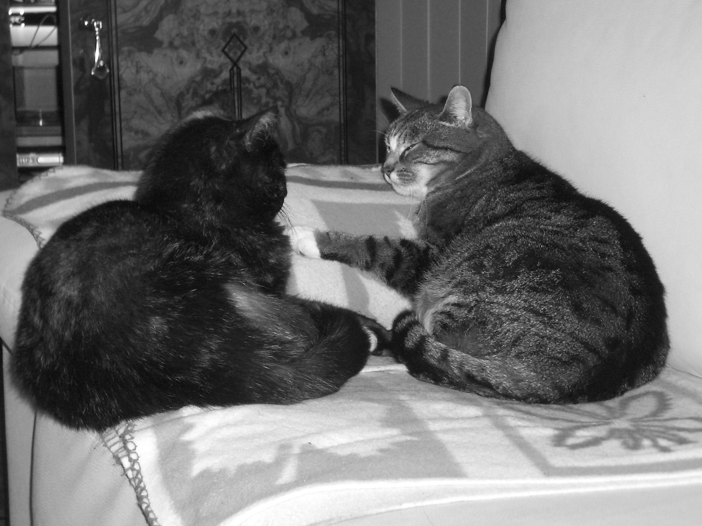
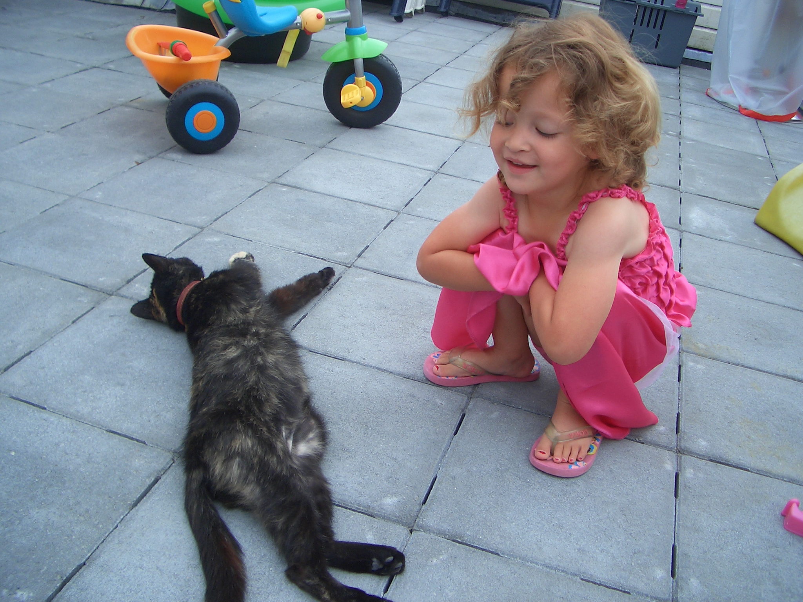
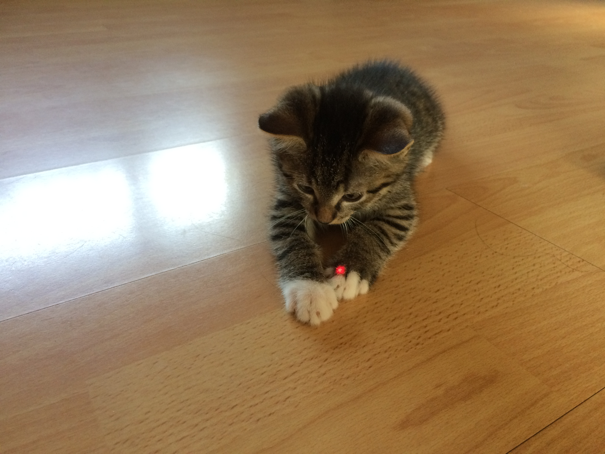

Caramel
Dit is Caramel. We hadden hem en Maui rond dezelfde tijd. Caramel en Maui konden het heel goed met elkaar vinden. Ze waren beste vriendjes.

Dit is Caramel. We hadden hem en Maui rond dezelfde tijd. Caramel en Maui konden het heel goed met elkaar vinden. Ze waren beste vriendjes.
Dit zijn Telma en Stimpie. Telma en Stimpie waren al best wel oud toen ik werd geboren. Ik speelde heel veel met ze.
Hier ben ik aan het spelen met Telma.
Dit is Maui toen hij nog een kitten was. Maui was als kitten heel nieuwschierig en wou veel met je spelen. Nu Maui wat ouder is houd hij vooral van slapen.
